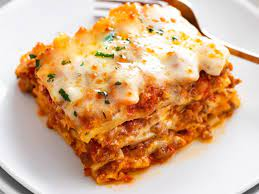

LASAGNA RECIPE

Bahan yang dibutuhkan :
a. Bahan untuk resepet kulit lasagna
b. Bahan saus tomat lasagna
- 1,5 kg Daging sapi cincang
- 3 kaleng beasr tomat potong dadu
- 250 ml kaldu ayam
- 500 ml air
- 2 batang seledri, potong dadu
- 1 bawang bombay, dipotong kotak
- 2 buah wortel besar yang dipotong dadu
- 170 gr pasta tomat kalengan
- 5 lembar daun basil
- Daun parsley
c. Bahan saus bechamel
- 200 ml susu cair
- 2-3 sdm keju parmesan
- 2 sdm mentega
- 2 sdm tepung terigu
back to index